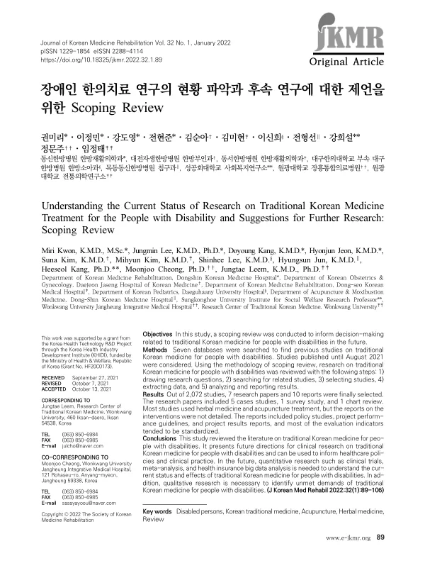

Understanding the Current Status of Research on Traditional Korean Medicine Treatment for the People with Disability and Suggestions for Further Research: Scoping Review
Kwon M, Lee J, Kang D, Jeon H, Kim S, Kim M, Lee S, Jun H, Kang H, Cheong M, Leem J
Journal of Korean Medicine Rehabilitation 32(1):89-106

첫 장 · 오픈액세스First page · open access
논문 소개Summary
세계 인구의 15%인 약 10억 명이 장애인으로 추정됩니다. 보건복지부 자료로 2017년 한국의 장애 인구는 약 266만 8천 명입니다. 장애인은 고혈압, 비만, 당뇨 같은 만성질환 유병률이 높고 심뇌혈관질환으로 인한 사망률도 높지만 의료 접근성은 오히려 낮습니다. 2016년 기준 장애인 가운데 의료급여 수급자는 16.5%로 전체 인구의 3%와 크게 차이가 납니다. 2017년 조사에서 장애인의 기대여명은 비장애인보다 약 17년 짧았습니다. 국립재활원 통계에서 장애인에게 흔한 질환으로 꼽힌 것은 관절증, 탈구와 염좌, 요추간판 장애 같은 근골격계 질환으로, 한의 치료가 강점을 보이는 영역과 겹칩니다.
그렇다면 장애인 대상 한의 치료 연구는 지금 어디까지 와 있는가. 이 고찰이 물은 것은 그것입니다. 데이터베이스 일곱 곳을 검색해 주제범위 문헌고찰의 절차로 정리했습니다.
2,072편을 확인해 논문 7편과 보고서 10편이 남았습니다. 논문 7편의 구성은 증례보고 5편, 설문 연구 1편, 차트 리뷰 1편이었습니다. 임상시험은 한 편도 없었습니다. 치료로는 한약과 침이 주로 쓰였지만 무엇을 어떻게 썼는지 자세히 적은 연구는 드물었습니다. 보고서 10편은 정책연구, 사업 지침, 사업 결과 보고서였고 평가 지표는 비교적 표준화되어 있었습니다.
이 결과가 말하는 것은 근거의 양 자체가 적다는 사실입니다. 증례보고 다섯 편으로는 효과를 말할 수 없습니다. 보고서 쪽이 논문보다 많다는 것도 이 분야가 연구보다 사업의 형태로 굴러왔음을 보여 줍니다.
저자들은 두 방향을 제안했습니다. 하나는 임상시험, 메타분석, 건강보험 빅데이터 분석 같은 양적 연구로 현황과 효과를 확인하는 것이고, 다른 하나는 장애인이 실제로 무엇을 필요로 하는지 확인하는 질적 연구입니다. 근거를 만드는 일과 무엇이 필요한지 묻는 일이 함께 가야 한다는 뜻입니다.
About one billion people, 15% of the world's population, are estimated to live with disability. Korean Ministry of Health and Welfare figures put the country's disabled population at about 2.668 million in 2017. People with disabilities have higher rates of chronic conditions such as hypertension, obesity and diabetes and higher mortality from cardiovascular and cerebrovascular disease, yet poorer access to care. In 2016, 16.5% of people with disabilities received medical aid benefits against 3% of the general population. A 2017 survey found life expectancy about 17 years shorter than for people without disabilities. National Rehabilitation Center statistics list arthrosis, dislocation and sprain, and lumbar disc disorders among the most common conditions, an area where Korean medicine has recognised strengths.
How far, then, has research on Korean medicine for people with disabilities come? That is what this review asked, searching seven databases and organising the findings through scoping review procedures.
Of 2,072 records, seven research papers and 10 reports remained. The seven papers comprised five case studies, one survey and one chart review. Not one was a clinical trial. Herbal medicine and acupuncture were the main treatments, but few papers described what was given or how. The 10 reports were policy studies, project guidelines and project result reports, with relatively standardised evaluation indicators.
What this shows is how little evidence exists. Five case reports cannot establish effectiveness. That reports outnumber research papers also indicates a field that has run as programme delivery more than as research.
The authors propose two directions: quantitative work such as clinical trials, meta-analysis and health insurance big data analysis to establish current status and effects, and qualitative work to identify what people with disabilities actually need but are not getting. Building evidence and asking what is needed have to proceed together.
인용Cite
Kwon M, Lee J, Kang D, Jeon H, Kim S, Kim M, Lee S, Jun H, Kang H, Cheong M, Leem J. Understanding the Current Status of Research on Traditional Korean Medicine Treatment for the People with Disability and Suggestions for Further Research: Scoping Review. Journal of Korean Medicine Rehabilitation. 2022;32(1):89-106. doi:10.18325/jkmr.2022.32.1.89